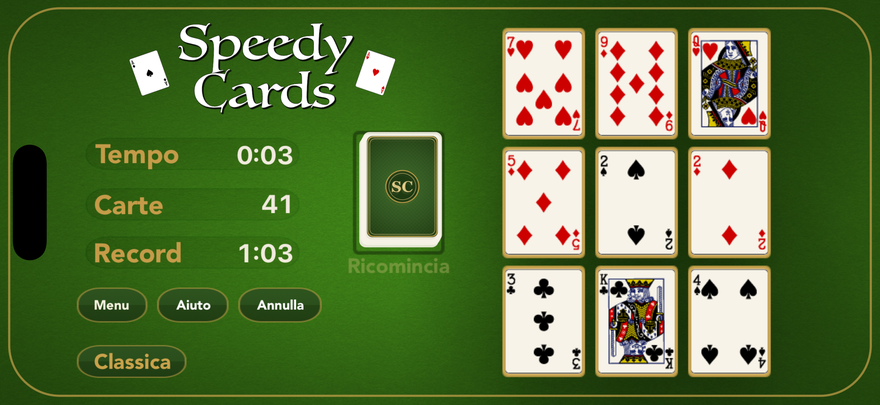
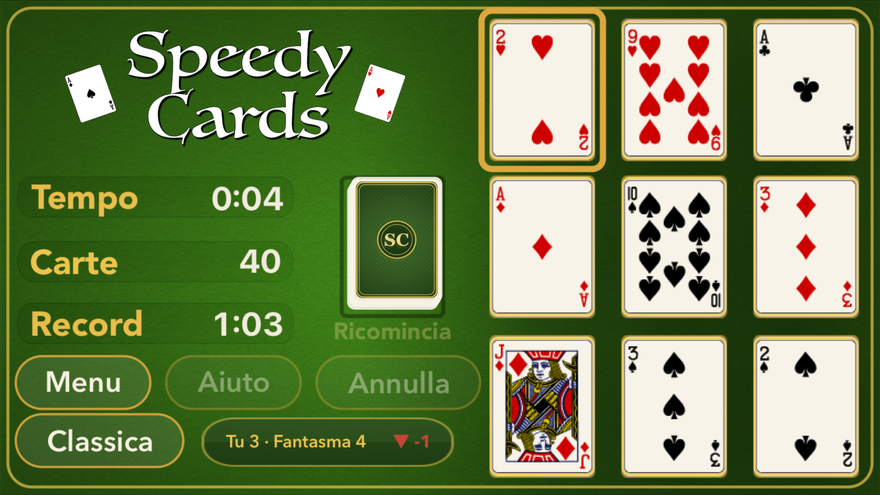
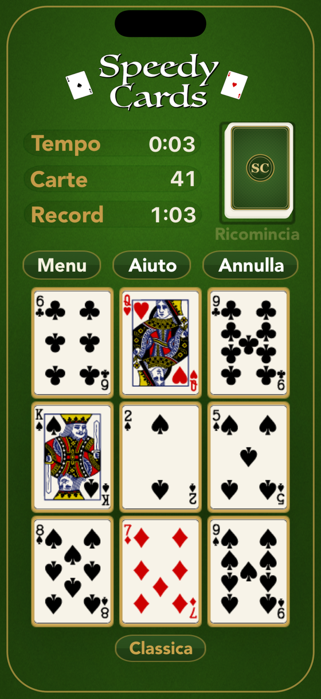

iPhone · iPad · Mac · Apple TV · Apple Watch
Niente pubblicità.
Un prezzo.
SpeedyCards è una gara di carte veloce ed elegante, in stile solitario, per iPhone, iPad, Mac, Apple TV e Apple Watch. Svuota il tavolo individuando le combo — un 10 singolo, una coppia che somma dieci o Fante-Donna-Re — mentre nuove carte arrivano senza sosta. Gareggia contro il tempo, il mazzo o i tuoi amici sulla stessa identica mano.


Vedere la combinazione prima che il mazzo ti seppellisca
Svuota il tavolo: un 10 da solo, due carte che fanno dieci, o Fante-Donna-Re. Mentre cerchi arrivano carte nuove, e non aspettano.
Tre forme, un’occhiata
Un dieci da solo, due carte che fanno dieci, o le tre figure insieme. Sono tutte le regole, ed è l’ultima volta che ci penserai.
Il mazzo non si ferma
Le carte arrivano a intervalli. Svuota più in fretta di quanto arrivino e il tavolo si libera; esita e si riempie.
Sfida quello che vuoi
L’orologio, il mazzo, la mano del giorno, o un amico sullo stesso identico mescolamento.
Lo stesso mescolamento, per entrambi
Un duello dà a entrambi esattamente le stesse carte: l’unica differenza è cosa hai visto e quanto in fretta. Manda un link o un codice di cinque lettere con qualsiasi app di messaggi e corri contro il suo fantasma.
Nessun account, nessuna registrazione, nessun nostro server in mezzo: la sfida è il codice.
Un motivo per tornare
Una mano al giorno, per tutti
Ogni giorno lo stesso tavolo per tutti. Le serie proseguono, e si possono guadagnare congelamenti per il giorno in cui la vita si mette in mezzo.
Un Gauntlet settimanale
Un torneo su Game Center, ogni settimana.
Un album d’ottone con trenta tavoli
I tavoli si guadagnano giocando, non si comprano — con un rango che cresce a ogni partita, vinta o persa.
Cinque piattaforme, un solo gioco
Si gioca sul telefono in tasca, sul Mac della scrivania, sul televisore dall’altra parte della stanza e sull’orologio al polso. Serie e progressi ti seguono attraverso il tuo iCloud, che noi non possiamo leggere.

Il tavolo, ovunque tu sia
In verticale sul telefono, in orizzontale sul Mac, dall’altra parte della stanza sul televisore, e con un’occhiata sull’orologio. Stessa mano, stesse regole, stesso tentativo sul tuo record.
I progressi viaggiano attraverso il tuo account iCloud, fra i tuoi dispositivi. Noi non li vediamo mai.
Per chi gioca
Nessuna pubblicità. Nessun tracciamento. Nessun account. Non si raccoglie nulla, non si vende nulla, e non c’è alcun SDK pubblicitario che ti osservi. Game Center è facoltativo ed è di Apple. Tutto è un acquisto una tantum: qui non si rinnova niente.
Il gioco parla undici lingue: italiano, inglese, tedesco, francese, spagnolo, portoghese, giapponese, coreano, greco, ucraino e russo.
SpeedyCards
Gratis da giocare, sbloccato con un acquisto. Cinque piattaforme Apple, undici lingue, senza account.